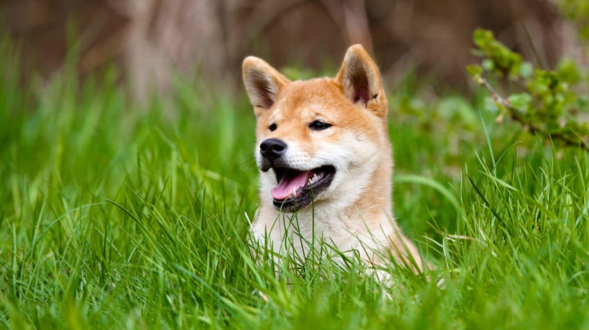

This is the category introduction which can give an overview of the purpose of the page
perhaps also drawing attention to the most important content.
These adorable, affectionate low-riders have long been favoured by British royals.
Mexico is embraced for its culture and indulgent, savory meals, a multitude of specialty drinks and beautiful beaches.

Sure, they're cute and look like cuddley bears, but how much do you really know about shiba...
Tenacious and athletic, this dog still habors the clevernss that made it highly-sought after bac...